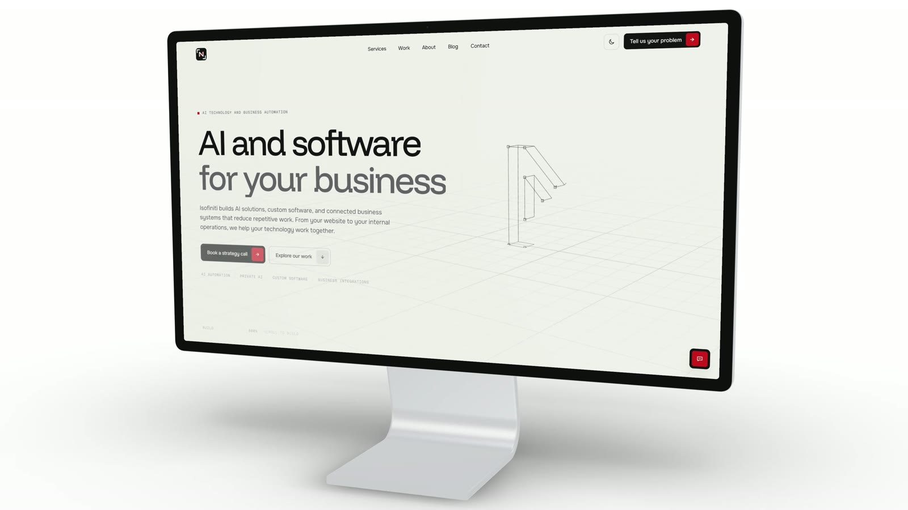
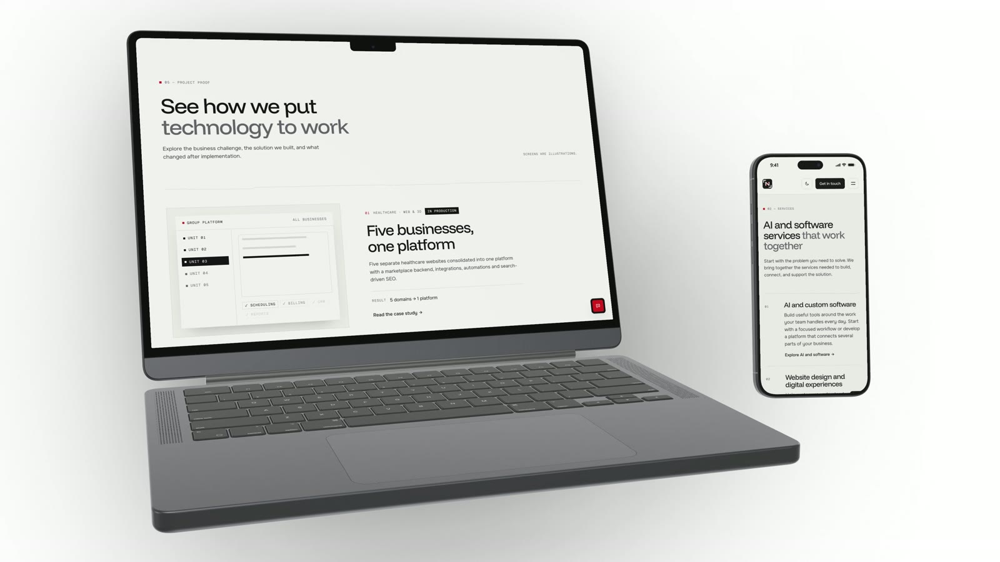
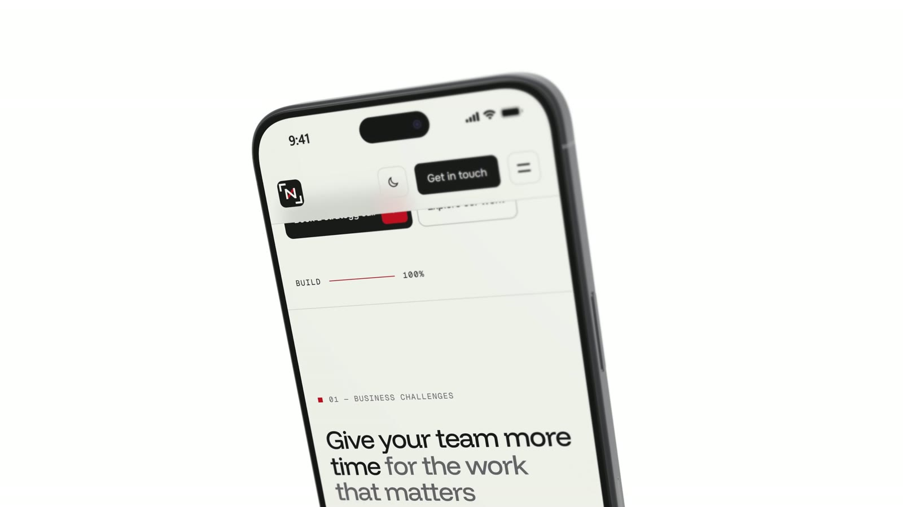
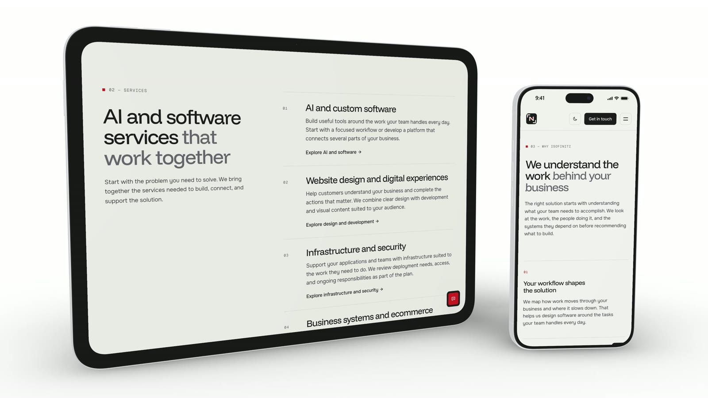
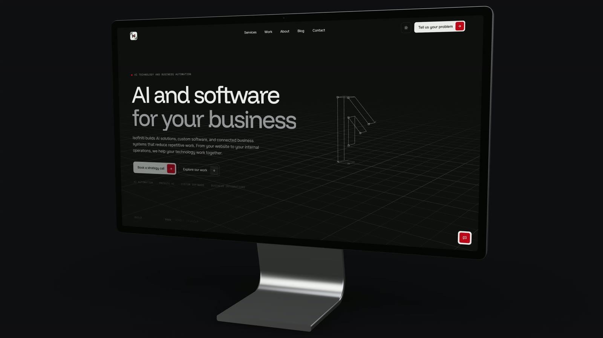
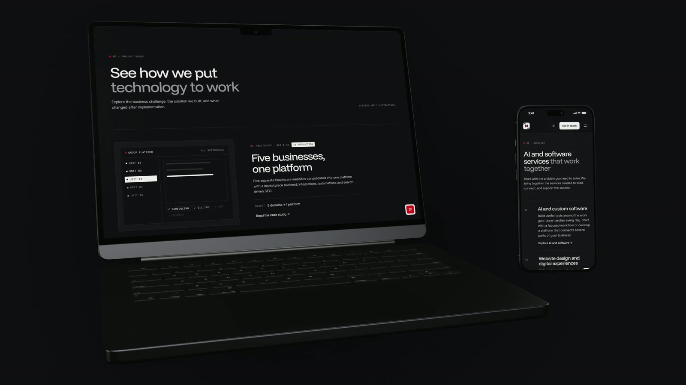

Lead with the main idea
Large headlines establish the purpose of each section. Short supporting paragraphs sit below them, creating a useful difference between a quick scan and a closer read.
A clear digital introduction to Isofiniti’s AI services, custom software and connected business systems.
Desktop and mobile views of the Isofiniti AI website.
Isofiniti AI Website is a responsive company website design for an AI and software business. My role is UI/UX design. The project brings together a service introduction, business challenges, project examples and a route to contact the team.
The design needs to serve visitors who arrive with different levels of technical knowledge. Some know the service they want; others can describe a business problem but do not yet know what kind of solution fits. The page structure gives both groups a way forward.
This is a separate direction from the Isofiniti 3D Website. The AI website uses editorial hierarchy and service-focused content to explain the offering, supported by restrained visual and motion details.
A broad technology offering can become a long list of capabilities. The design priority is to help a visitor understand where the company may be relevant before asking them to choose a technical service.
The page moves from a broad introduction into more specific information. Its structure lets a visitor scan first and investigate further when a section matches their needs.
This is a content journey rather than a fixed funnel. A visitor can move directly into a service, open the work, or get in touch from an earlier point. Repeated contact actions keep the next step available without making every section visually compete for attention.
Large headlines establish the purpose of each section. Short supporting paragraphs sit below them, creating a useful difference between a quick scan and a closer read.
A restrained palette leaves most of the page to type, spacing and content. Small red accents identify key actions and brand details, helping those moments stand apart from the surrounding information.
Service groups repeat a recognisable heading-and-description pattern. That consistency lets visitors compare sections by subject instead of learning a different presentation for every capability.
The phone and tablet mockups carry the same introductory messages and service structure. Stacked content gives the smaller formats a clear reading order while keeping important routes to contact accessible.
The mockups show how the typography, content hierarchy and navigation work across desktop, tablet and phone presentations. The selected frames below expand on the walkthrough at the top of the page.

A direct headline and a restrained layout establish the AI and software offering.

Laptop and phone views show the work presentation and a route into a more detailed example.

The phone presentation stacks the introduction, contact action and business-challenge content.

Tablet and phone views retain the service headings and supporting descriptions in a clear reading sequence.
The two presentations keep the same content structure. Backgrounds, surfaces and text contrast change while the placement of key actions remains familiar.

The desktop opening keeps its hierarchy while the surface and text colours change.

Project examples remain part of the same visual system in the darker presentation.
The finished design presentation connects a broad service offering to a readable site structure. It demonstrates editorial typography, repeated information patterns and responsive layouts, with multiple routes from the introduction to a relevant service or enquiry.
The focus is clarity at each stage: explain the offering, make the sections easy to scan, and give the visitor a useful next step. The desktop, tablet and phone mockups show how that structure carries across formats.